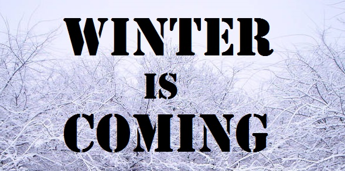

Results
Unit 7
Learning outcomes
By the end of this unit you should:
- understand the purpose and common features of result sections
- be able to create and use visuals (graphs, tables and images) to show data
Activity 1
Read. Understand. Discuss. Ask and answer.
The result section addresses the question “what” and describes what you made (the product) or what you found (results: data). Products could be software, hardware or artefacts. Data could be identified through surveys or experiments. In the results section the results are described. In the discussion section the results are interpreted. Results and discussion sections may be combined. Sometimes this combined section is called Findings. However, the sequence tends to remain the same with the combined section with descriptions preceding interpretations. When reporting results, it is important to report the important results first.
GroupingResearch projects often produce large quantities of data. Consider a project that generates a results table of 200,000 cells. This table contains all the results of the project. But, the table is too large to include in your graduation thesis. There are also too many data points. Readers will find it difficult to understand (and probably stop reading). To make your results easy to understand, try to group similar datapoints together into datasets. For example, from the 200,000 datapoints, we could create three groups: high numbers, low numbers and special cases. It is far easier for you to write up and far easier for the reader to understand.
Approximations
Numerical data is often reported. To help readers understand more quickly, approximations are frequently used to describe data. For example, a result 102/987 is achieved in a simulation. This is approximately 100/1000 which can be simplified to approximately 1/10. Five ways to write this are given below.
- Exactly 102/987
- Approximately one in ten
- Around one out of ten
- Just over 1/10
- Slightly more than a tenth
In a sentence both the exact and approximate figures can be given, e.g.:
- Approximately one in a ten (102/987) trials were XXXXX .
Visuals
Result sections frequently contain visuals. Commonly used visuals include graphs, tables, charts, diagrams, images and screenshots. Each visual is given a number and a title. The title for tables is generally above the table. This is because we usually read tables starting from the top. The title for figures is generally below the figure. This is because figures are often graphs. When we read graphs, we usually check the horizontal axis (x axis) to understand what the graph means. Therefore, we read graphs from the bottom and so the title is below. In Microsoft Word, you can use "insert caption" to add titles for tables and figures. Each visual must be referred to in the text. This is easy to do if each figure and table has a number. Three common ways of referring readers to visuals are given below:
- Fig. 1 shows the XXXXX .
- As shown in Fig. 1, XXXXX .
- XXXXX (See Table. 1).
Activity 2
Work in pairs or small groups. Discuss the following:
When two wrestlers fight. What is the chance that the one wearing red shorts beats the one wearing blue shorts? Are the odds even (50%/50%) or is there higher chance that red wins or a higher chance that blue wins?
Activity 3
Read this results section carefully. When you are ready, share your opinion with a partner.
Extract of results section
However, we found that for all four competitions, there is a consistent and statistically significant pattern in which contestants wearing red win more fights (χ2 = 4.19, d.f.=1, p= 0.041; Fig. 1a). This result is remarkably consistent across rounds in each competition, with 16 of 21 rounds having more red than blue winners, and only four rounds having more blue winners (sign test, p=0.012). The effect is the same across the weight classes in each sport: 19 of 29 classes had more red winners, with only six classes having more blue winners (sign test, p=0.015).
Hill, R. A., & Barton, R.A. (2005, May 19). Red enhances human performance in contests. Nature, 435, p. 293.
Activity 4
Work in pairs. Answer the questions below.
- Does the colour red enhance human performance?
- What are the numbers in brackets?
- What does χ2 mean?
- What does Fig. 1a mean?
- Explain why past tense is used for the verb find? [line 1]
- Explain why present tense is used for the verb be? [line 1]
- Yes, surprisingly, contestants wearing red win more fights.
- Results of statistical tests
- Chi squared (χ2) is a statistical test of association. It can be used to determine whether two variables are related.
- Fig. 1a refers to a Figure. In research papers, figures are usually graphs, charts, tables or images.
- The past tense of find, found, is used to show completion. Past tense is usually used for completed or finished actions.
- The present tense of be, is, is used to show an unchanging situation, i.e. a general truth. For example, the pattern was there yesterday, continues to be there today and will continue to be there tomorrow.
- Don't use fractions where the denominator (the number under the line) is greater than 5 - many people do not know that 1/6 = 16% or that 7/8 = 87.5%
- Don't forget the hyphen in fractions; e.g. 'one-third' (but not after 'a'; e.g. use 'a third')
- Don't forget to add an 's' on the end of fractions starting with two or greater; e.g. 'two-thirds', 'three-quarters'
- Most fractions can be followed by the preposition 'of '; e.g. 'Three-quarters of the staff were satisfied with working conditions.'
- Most fractions are followed by a plural noun; e.g. 'half of the books', except uncountable nouns
- In strictly correct grammar use 'fewer than' for countable nouns and 'less than' for uncountable nouns
- It is more natural to use 'a' instead of 'one' in front of fractions; e.g. 'a third of ...'
- In front of 'half ' you do not need to use 'a' or 'one-'; e.g. 'Half of the staff were satisfied with their working relationships.'
- Do not use a number at the start of a sentence, because it's bad style. Use words; e.g. '100 One hundred of the staff were satisfied with working conditions.'
- Be careful of the spelling of 'several' - it's not 'serveral'
- Remember that 'only' and 'just' often have a negative meanings, so use them only if you want to show that something is bad; e.g. 'Only 1% of our staff were satisfied with working conditions.'
- One sixth of the class of students arrived on time.
- Regarding the improved functionality, just 19% of the users said that they were satisfied.
- Opportunities to receive feedback were important to serveral users.
- Two-fifth of respondents are satisfied with the user interface.
- Less than 30 responses were received.
- Three quarters of the test subjects did not understand the final part.
- Only one-quarter of the test subjects completed the task successfully.
- The population of Aizu-wakamatsu is 124,062.
- 106 people submitted to the responses.
- See Tip 1
- See Tip 11
- See Tip 10
- See Tip 3
- See Tip 6
- See Tip 2
- See Tip 7
- The number is not an approximation. How about "approximately 120,000"?
- See Tip 9
- Click in the table cell containing the item you want to move.
- Click in the table cell where you want the item to go. The words will swap position.
- If an item is in the right position, it will have a green background and a tick.
- When all the table cells are green and have ticks, you have finished.
- Are results described or interpreted in the results section?
- Are results described or interpreted in the discussion section?
- Why are visuals used?
- Why are approximations used?
- Why do we number tables and figures?
- What is the usual position for titles of tables and figures?
- Did you start writing your results? If not, when will you start?
Activity 5
Read the advice written by Andrew Morrall of Hong Kong Polytechnic University.
Advice on approximation
Approximation means describing numbers or statistics by using a fraction that is similar to the exact number; e.g. using 'about one-third' instead of 34.76%, or an easy-to-remember number such as 'just under one million' instead of '997,652'. There are a number of reasons for doing this. Firstly, it is easier for people to understand and remember. Secondly, the numbers or statistics may be more detailed than necessary.
| 21% | about a fifth of | 2 | a small number of | |
| 28% | just over a quarter of | 3 | a few | |
| 33.3333% | a third of | 7 | several | |
| 49% | just under a half of | 9 | fewer than ten | |
| 65% | about two-thirds of | 115 | over a hundred | |
| 74% | almost three-quarters of | 1,043 | over a thousand | |
| 92% | most of | 749,982 | about three-quarters of a million | |
| 98.5% | almost all | 1,256,890,534 | over 1.2 billion |
Activity 6
Work in pairs. Correct the errors in the following sentences.
Activity 7
Match the items in the boxes on the left with the items on the right:
Score: /
|
||||
|
Target | |||
| 1 | 1 | |||
| 2 | 2 | |||
| 3 | 3 | |||
| 4 | 4 | |||
| 5 | 5 | |||
| 6 | 6 | |||
| 7 | 7 | |||
| 8 | 8 | |||
| 9 | 9 | |||
| 10 | 10 | |||
With thanks to Andrew Morrall for creating the original version of this activity
.
Unit review
Answer these questions.
Motivate me
“Winter is coming. Write or regret.” – adapted from Game of Thrones
